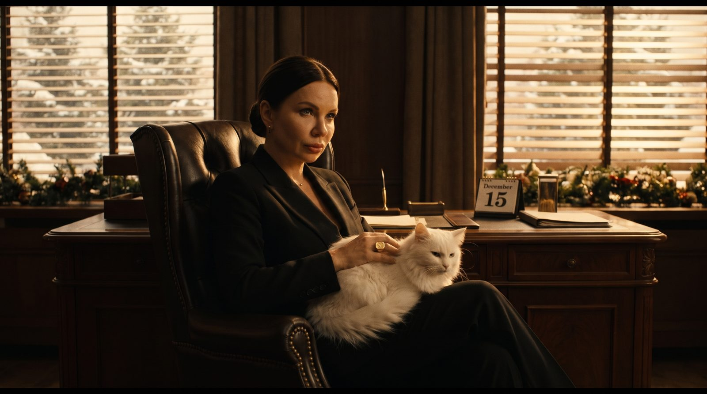
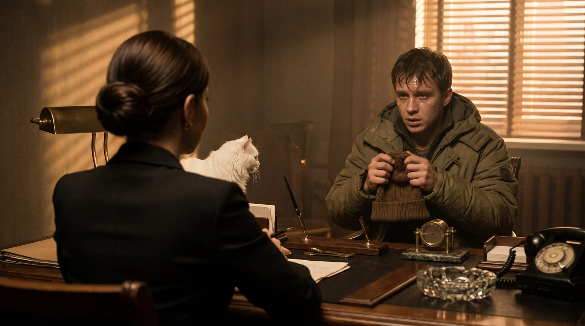
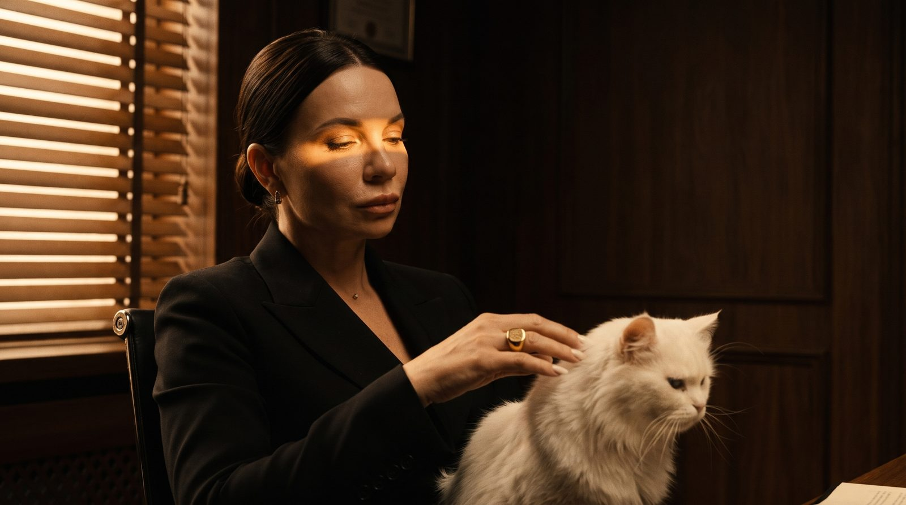
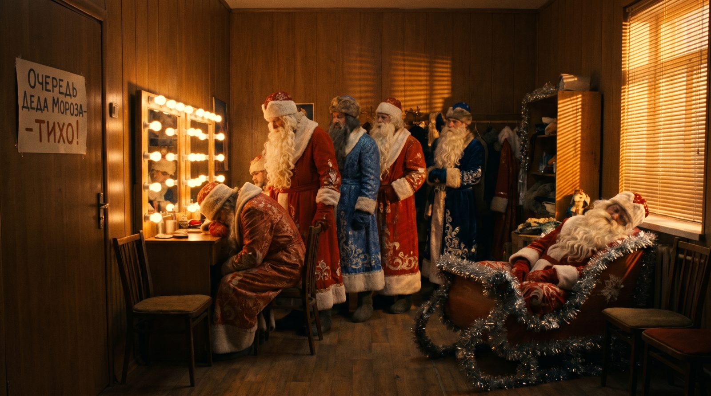
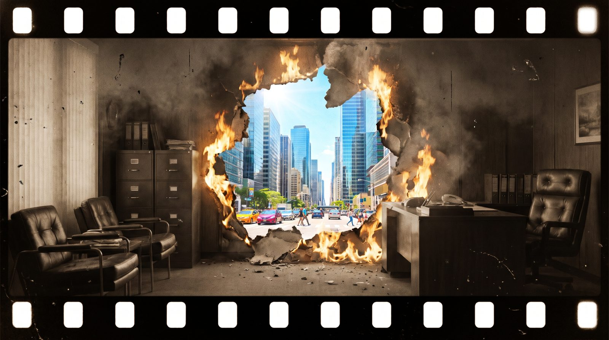
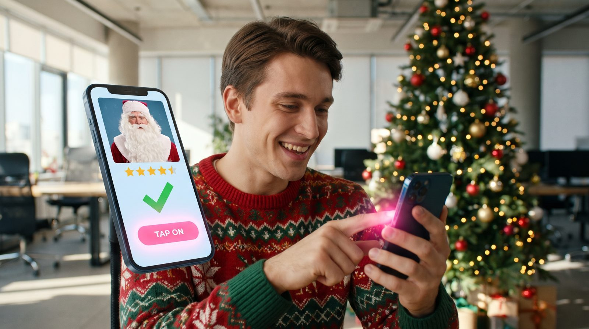
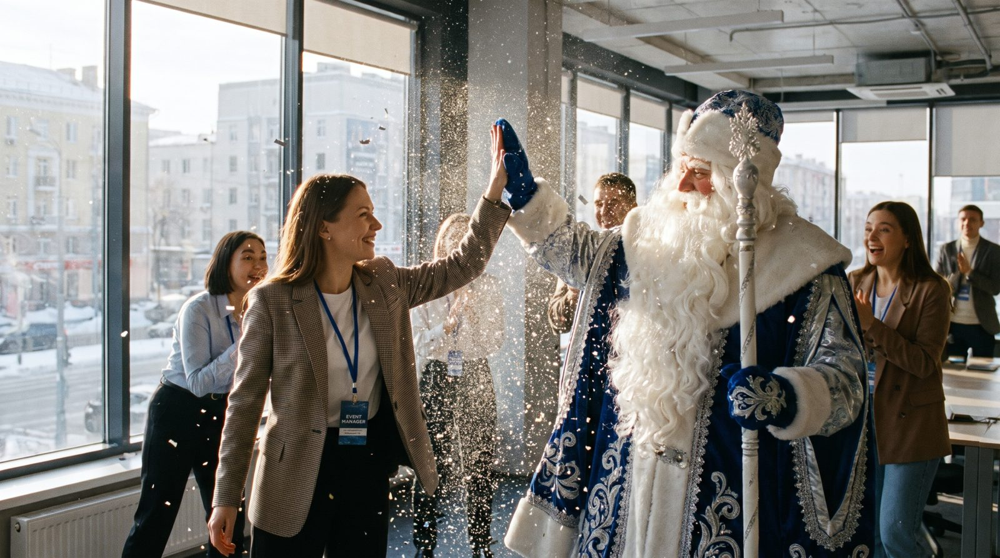
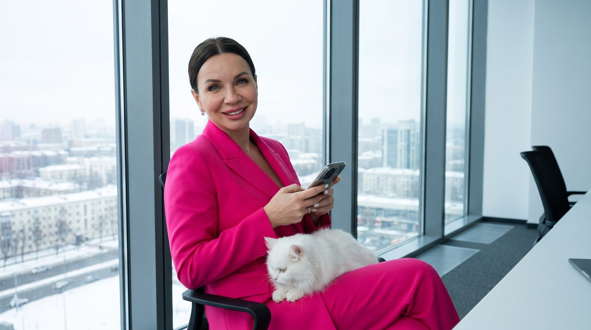

Сцена 1 · 0-6 с
Кабинет Крёстной, 15 декабря
Тёмный кабинет, жалюзи, полосы света. За окном снег и гирлянды, на столе календарь «15 декабря». Настя в кресле, на коленях белый кот.
Тишина. Тикают часы.
Пародия для ИИ-кемпа, около 60 секунд, 8 сцен. Кадры здесь эскизы: показывают настроение и свет.

Тёмный кабинет, жалюзи, полосы света. За окном снег и гирлянды, на столе календарь «15 декабря». Настя в кресле, на коленях белый кот.
Тишина. Тикают часы.

На переднем плане спиной к нам Настя за столом: тёмный пучок, чёрный костюм. Напротив ивент-менеджер в пуховике мнёт шапку.
Менеджер: «Крёстная… У меня корпоратив двадцать восьмого. Пятьсот гостей. Мне нужен Дед Мороз».

Настя гладит кота и не поднимает глаз. Медленный наезд камеры.
Настя: «Ты приходишь ко мне пятнадцатого декабря… и просишь Деда Мороза. На двадцать восьмое. На самую горячую дату года. (пауза) Но ты делаешь это без уважения».

Пауза. Настя протягивает руку. Менеджер склоняется и целует перстень.
Настя: «Ладно. Я пойду тебе навстречу». Менеджер (целуя перстень): «Спасибо, Крёстная».

Кадр с перстнем замирает, сепия выцветает, плёнка рвётся и сгорает. Сквозь дыру бьёт яркий дневной свет.
Титр: «Так было раньше». Звук: треск плёнки, скрип пластинки.

Тот же менеджер, но в ярком современном офисе с ёлкой, в свитере с оленями. Открывает на телефоне «Человеков», жмёт «Найти Деда Мороза». На экране карточка: «Дед Мороз, бас, ★4.9, 28.12, 19:00» → зелёная галочка «Подтверждено».
Голос: «Теперь так». Звук: «дзынь».

Вихрь снежинок, и рядом с менеджером возникает Дед Мороз в синем расшитом кафтане. Подмигивает, даёт пять.
Дед Мороз: «Подтверждён!»

Снова Настя, но уже в светлом кабинете, в розовом костюме, с тем же белым котом. Смотрит в камеру, улыбается. Логотип.
Настя: «Уважение теперь в одну кнопку». Титр: «Человеки. Дед Мороз, аниматоры, промоутеры. Бронь в один клик».